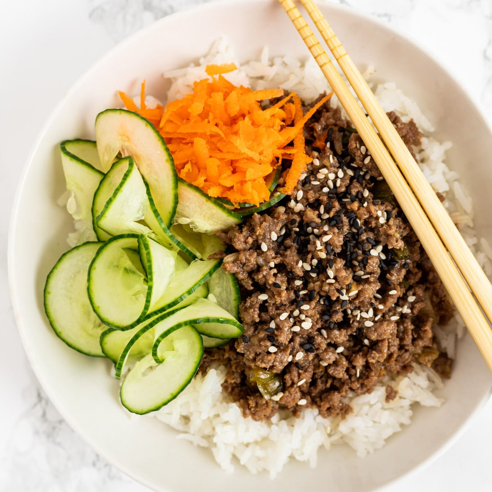

Easy Korean Beef Bowl
This delicious Korean beef bowl is quick and easy to make with ground beef. It's seasoned with fresh ginger, garlic, soy, sesame seeds, and crushed red pepper, but these ingredients can easily be adjusted to suit your taste. Serve over warm rice or spiralized vegetables.
Ingredients
- 500 gram lean ground beef
- 5 cloves garlic, crushed
- 1 tablespoon freshly grated ginger
- 2 teaspoons toasted sesame oil (optional)
- ½ tablespon soy sauce
- ½ teaspoon sugar
- 3 chillies, chopped
- 4 scallion, chopped, divided
- 1 wortel, chopped
- 1 cucumbers, slices
Directions
Step 1
Gather the ingridients
Step 2
Heat a large skillet over medium-high heat. Add beef and cook, stirring and crumbling into small pieces until browned, 5 to 7 minutes. Drain excess grease.
Step 3
Stir in garlic and ginger and cook until fragrant, about 2 minutes.
Step 4
Stir in soy sauce, sugar, and chopped chillies. Cook until beef absorbs some sauce, about 7 minutes.
Step 5
Add 1/2 of chopped green onions.
Step 6
Serve over hot cooked rice; garnish with chopped wortel, slices of cucumber, and remaining scallion.